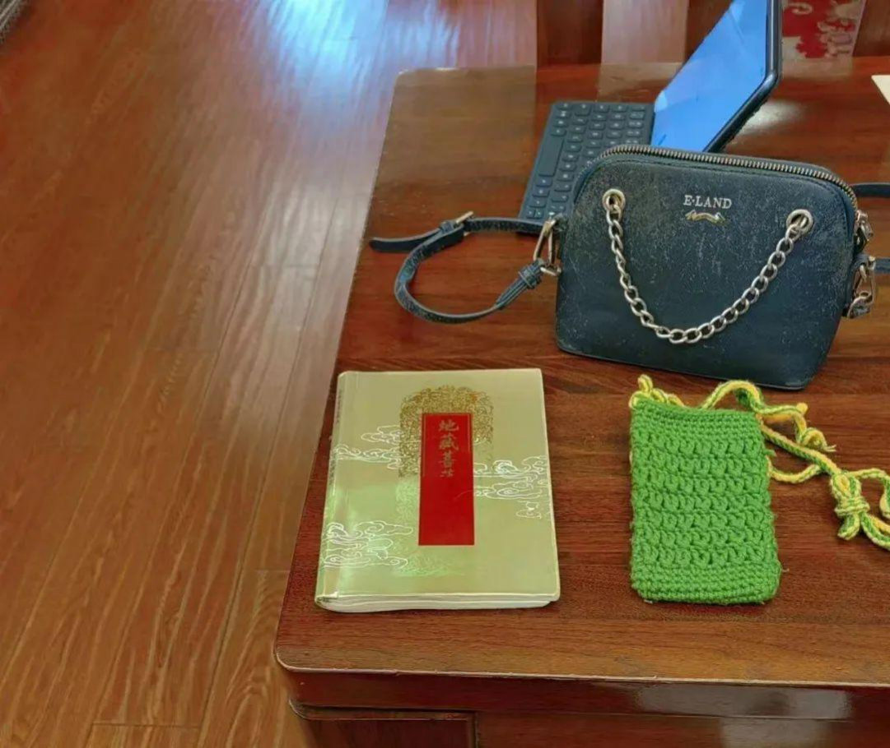
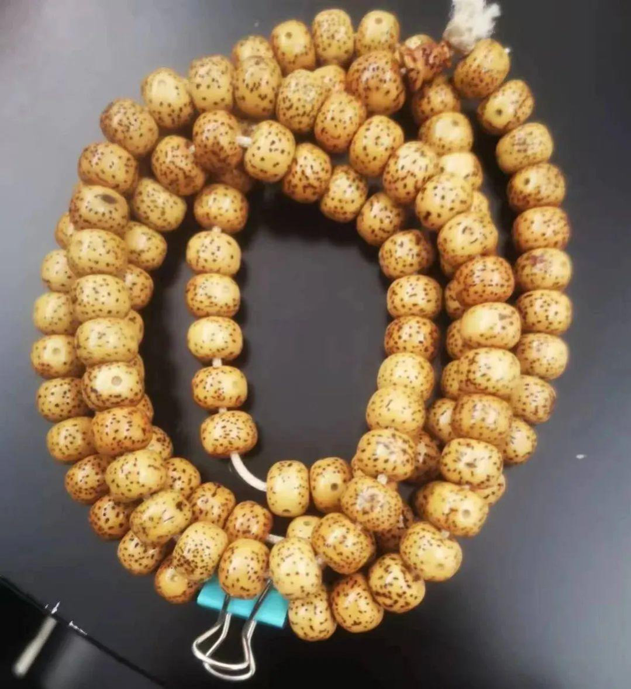
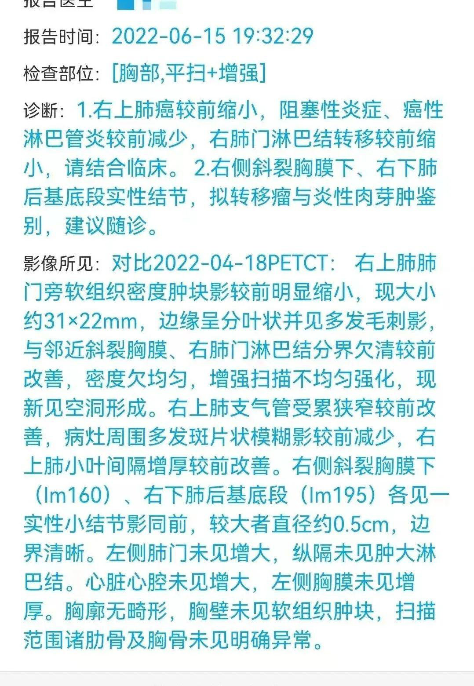
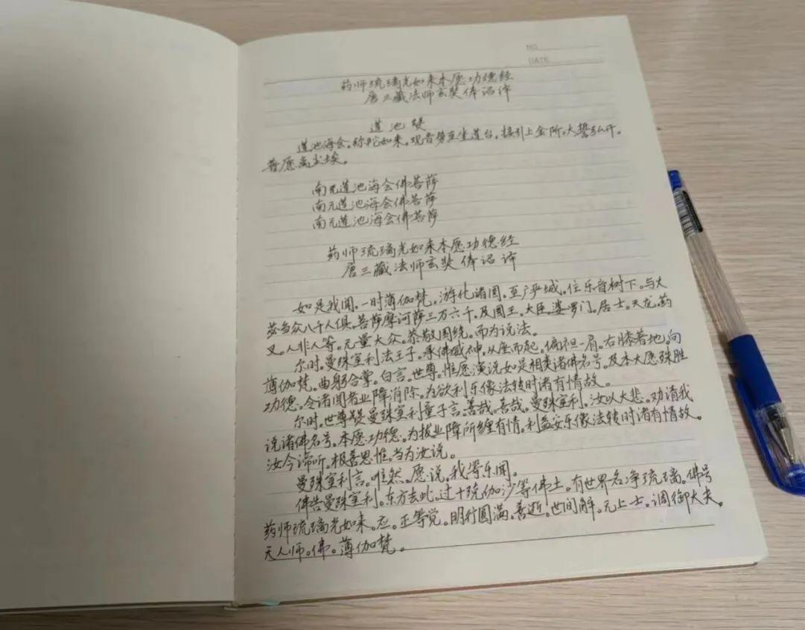
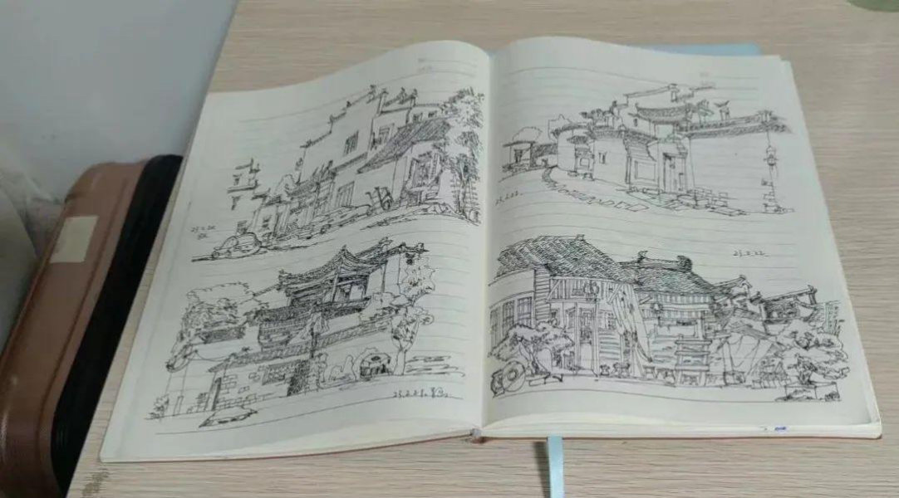
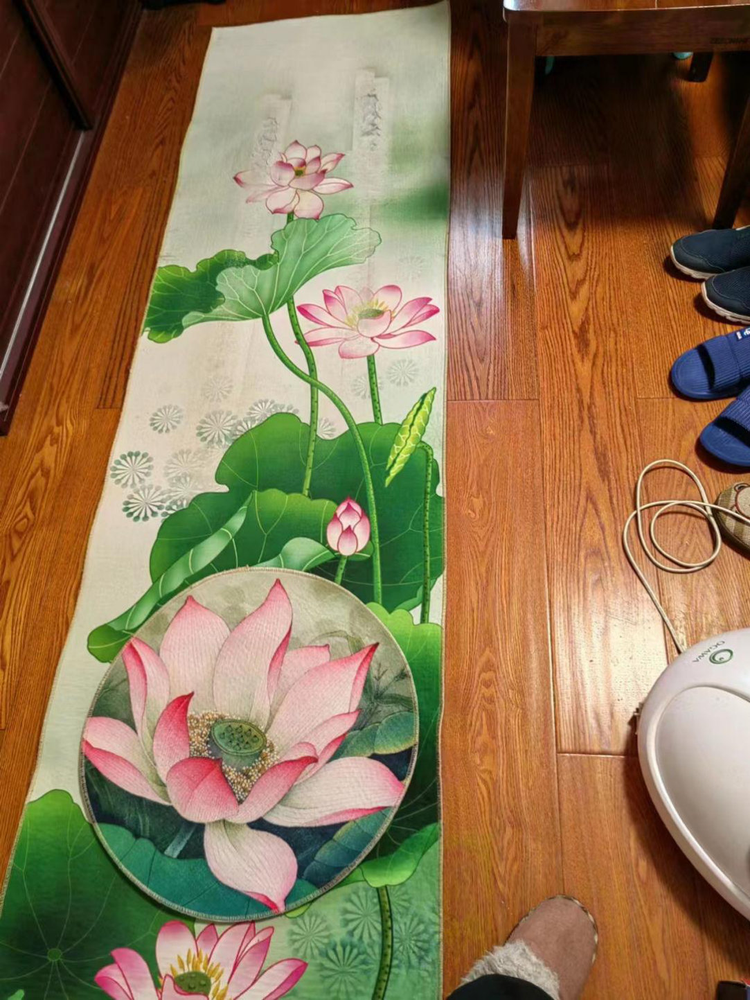
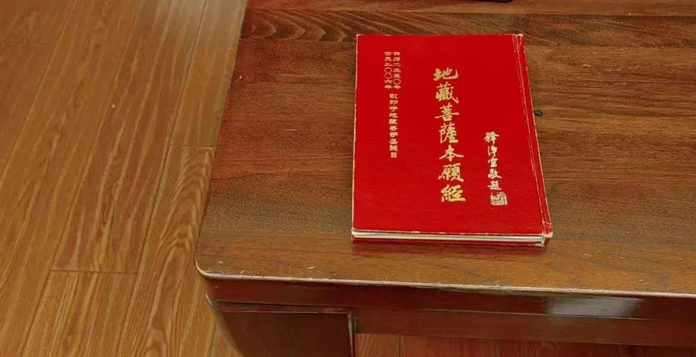
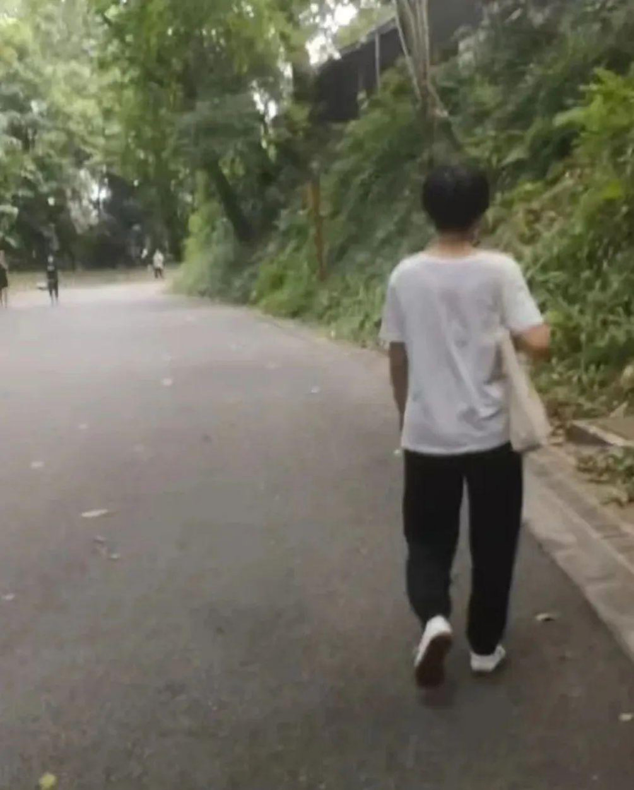

实修故事
历时5年多完成3000遍地藏经
其中半年发愿1000遍助丈夫治愈癌症
分享者：Tai群内安徽师兄
这是一篇长文，得知群内有一位师兄圆满了3000部地藏经，遂请她
来分享，但没想到，其中的故事也颇为曲折。这里将用三个篇幅来展
开讲述。
上篇：助癌症丈夫治愈的故事
中篇：9年Tai实修经历的分享
下篇：Tai小编互动问答
【上篇：助癌症丈夫治愈的故事】
学佛初期与丈夫关系剑拔弩张
原本很幸福的家庭，还曾被评为县“五好家庭”，因我学佛的原因，我和丈夫渐行渐远！开始的几年他只是偶尔发发脾气，后来发展到心里充满嗔恨，见我哪也不是。他不强烈反对我学佛，如不准我在厅里磕大头，如果放有关佛法的视频，他听见了可能会引起一场风暴。
在家我不敢随便接佛友或师父的电话。有两次太过分，他把到我家的佛友推到门外。开门前我求他不要生气，给我一点面子，可是脾气来了地动山摇，根本没有办法。闹得罪严重的一次，他给我两条路：要么学佛，要么离婚。离婚协议都写了。
从2018年到2020年，我常常是一边磕头一边痛哭说对不起。在一些重要的日子，我放生了叫他不要伤生，他偏偏去买鱼虾来吃，且说歪理！他慢慢更不可理喻了。我和孩子们不知道哪件事，哪句话会引起他爆发。家里气氛紧张极了。直到2020年农历十月十五，我们几个佛友去一个庙里念佛，我求老师太开示，她让我回家念大悲咒回向给他。
从那时起我每天念七遍大悲咒回向给他，希望他平安健康，福慧双增！后来真的改变了一些，家里的气氛有所缓和。

因病丈夫结佛法续慧命
2022年4月12日，丈夫因咳嗽半年之久不愈，去市公立医院体检，当天就查出肺部病变。第二天还要继续做加强CT进一步检查。当时心理紧张起来，就开始念《地藏经》，当晚念了三部。
第二天一早我就动身去医院了。并带了《地藏经》，有时间就念。下午做了加强CT，第二天结果出来：肺部阴影，多个淋巴增大，支气管上有结节，肺上还有二个结节。胸部淋巴增大。考虑肺癌并移淋巴。肺部肿瘤
4.8cm*5.6cm。当时他还爆发了带状疱疹，还要做气管镜确诊。
我吓坏了，去问医生。医生说已经不能手术了，只能保守治疗。无法想象我当时的崩溃。
我第一时间告诉了外地的老二，不敢给女儿说。老二告诉了女儿。女儿果断地说：停止一切检查，快速到广州。马上买了飞机票，可是下午接到通知飞机停飞。准备坐普通火车，火车也停了。只好坐高铁辗转到了广州。4月17号到广州，黄码，住不了酒店，入不了院。广州当时黄码是三天两检才能入院，幸运的是我们4月18号就入院了。
做了一系列的检查，确诊肺癌。万幸腋下淋巴结没有癌变。4月22号出院，在家等待入院治疗。
为顺利治病发愿半年念1000遍地藏经
得知丈夫确诊肺癌后，我开始发愿念100部《地藏经》，后来群里师兄建议我半年念1000部，我迟疑了，怕完成不了。她说了她的经历，坚定了我的信心。我把一切能利用的时间都用起来了。乘车、等车、做核酸、陪丈夫看病排队，每天时间以分来计算。念忏悔三昧，念观音圣号。我有一个坚定的信念：菩萨一定会救他的！
开始的时候丈夫情绪不太稳定，我还得开导他。我和女儿想尽办法善巧告诉他：生病原因很多，但是因口德差，冲撞父母，脾气爆，伤害别人太多也是原因之一。情绪也是致病的因素。慢慢熏习他接受因果定律，劝导他控制情绪。过程很难，反反复复的。劝他念佛，说这时候只有佛能救你。

群里隆顺师太送给他的念珠对他帮助很大，他拿着念珠念观音菩萨圣号。开始的时候让他一天念1000遍，他都难完成，念着就瞌睡。后面每天念3000遍圣号，一周抄一部《药师经》。
在这期间，治疗特别顺利，5月2号，第一次化疗加免疫，3号出院。一周后门诊化疗一次。第一个疗程结束。第二个疗程28号做的，胸透肿瘤缩小到3.4cm*2.1cm。一周后门诊了一次。二个疗程结束。然后6月30号手术，病理已经没有癌细胞。所有增大的淋巴都没有转移细胞。听到消息，我痛哭流涕！
这次丈夫生病，自2022年4月12日得知病情的当晚，我就开始念诵地藏经，到9月22日念诵完成了1001部地藏经，历时5个多月完成。
丈夫生病期间4～7月，还进行了大量的放生、供养三宝等事。我大概放生金额有一万五左右。还有女儿也放生了不少。还有一些供养三宝的，供灯助印等没有具体统计，一万多也有。还有些是女儿做的。

学佛给家人的改变
关于公婆：婆婆2014年元月检查出肝癌晚期，医生预测三到六个月。我每天给她念《金刚经》，希望减少她的痛苦。婆婆真的很平静的走完她最后的日子。公公2019年3月患肺癌，对于一个85岁高龄又中风过的老人，医院不建议手术治疗。开了一点药和止疼片就回家了。我念《地藏经》回向给他，希望他减少痛苦。他2020年7月往生，身体没有任何的痛苦，没有吃任何药，止痛片没有吃过一粒。临终前一个月就是静静的睡觉。
关于丈夫：由暴躁到平静。以前遇事不弄明白，先抱怨。现在冷静了。对于一些善书不再排斥，可以跟他聊聊宇宙法则，因果报应。对于一些事不再愤青，偏执。以前是情绪看事，现在理智思考。他现在精神状态很好，转变很大，平和了，也可以帮女儿接孩子了。他也在抄经念观音菩萨圣号。
关于女儿女婿:女儿很孝顺，每月发工资的时候就随喜一部分金额放生。女婿也是很棒，广州大佛寺地藏殿封顶，他以我丈夫名字随喜了2000元。关于自己：原先一些慢性病不见了，多年都没有感冒吃药，人更精神；皮肤滋润了，以前夏天手都要涂护肤品。珍惜时间了，不敢扎堆闲聊，闲聊长了，有种负罪感；节俭惜福，很少买衣服，常常捡女儿淘汰下的衣服。食物清淡；睡眠时间减少。常常关注内心，等等！
我们家又恢复了以往的和谐祥和，家庭气氛温馨起来！感恩一路帮我们走过来的一切人！


【中篇：9年Tai实修经历的分享】
2014年贴吧结缘Tai师父
自女儿上大学后，我就比较闲了，喜欢逛百度贴吧。机缘巧合，2014年，Tai师父还在贴吧的时候，我爬楼看完了他的贴子，一直追到Tai师父回国，后来加入群，请了纸质书。
非常惭愧这么多年修行没有什么进展！自从请书后，不再玩其他的东西了。2014年女儿大宝出生，我也常常帮她带娃，自己的时间就少。尽管如此，打坐，磕大头我还是开始了。还每天诵三部《金刚经》。除特殊情况，几乎没有怎么间断。腹式呼吸似乎很自然一学会了。我想或许是快速念经，吐完气肚子瘪下，然后自然吸气肚子鼓起的原因吧。
我不懂什么高深的佛理。佛经没有看过几部，别说理解了。惭愧！对于小白的我，我只读过几部经。自从接触Tai法后，入群，算是找到了组织，就有了归属感。高深玄妙不会吧，那就从简单可行的开始吧，相信总有一天会开智慧的。
修身：开启艰难的双盘和磕大头
身体硬，单盘都盘不上，从散盘、单盘，双盘，到现在还不能舒舒服服坐一个小时，历时漫漫十年。之前有四天熬两小时，两膝盖痛了好多天，再也不敢了。也没有那个忍耐力，心力不够。耐心等待花开吧，相信哪怕爬行，只要不放弃总会到达。
从2014年开始磕大头，就是在地板上磕，额头磕破了，手臂膝盖破了，白天没有时间，都是晚上9点后磕108个。汗水如雨一点都不夸张。在女儿家的时候还没有场地，我住的她单位的合住公寓，一个14平米的房间，磕头时还不好意思，把房门关着。
开始108个要半个小时，慢慢的速度上来了，12～13分钟能磕100。2014～2018年，磕头有时候间断过，总体还是在坚持。2022年4～5月，停了一段时间，身体沉重，又磕起来。由于没有时间，只能磕120。后来完成1000部《地藏经》，还是试了一次磕500，能比较轻松完成。磕300和磕500以上，身体的感觉真的不一样。磕500以上，那个腿非常轻松，走起路来，感觉是软的，气化了似的。可是我太在乎这个色身了（那段时间太操劳体重下降），没有大量磕头了。

从断续到后面坚持诵地藏经
刚开始由于要带孙子，总认为太忙，没有时间念《地藏经》，只是偶尔念念，为家人消灾祈福！记得因为老公脾气不好，我为他念过108部。外孙身体弱，也为他念过100部。等忙完了事，常常念到夜里12点多。
2017年元月女儿二宝要出生了，我就给二宝念《地藏经》，念完七部，二宝出生了。这个小外孙女真如《地藏经》所说，安乐易养，非常皮实。就在那时有个佛友请我加入地藏经共修。因为Tai师父说要念《地藏经》，我就参加了。那时是第二届，直到现在第十届了，就这样我一直念《地藏经》。汗水泪水换来的是觉醒
从专诵《金刚经》到2017年兼《地藏经》。一路走来，汗水伴着泪水。换来的是觉醒，是生命的升华！开始接触佛法，求健康，求顺利！也实现了很多，慢慢自利利他的观念升起来，直到现在求解脱。
Tai师父说过学佛没有资粮，没有福报不行。所以也在随心随力践行。放生、供养三宝等，培植福报！
有耕耘就有回报，家里除老公反对我学佛外，其余一切都顺利！2018年底，在临近退休时还成功申报了高级职称。本打算2020年（55岁）退休。结果中间环节出了的差错，没有退成功。如果当时退休的话，工资会少很多的。原以为修行会让我一切顺利，身边的人做个榜样！可是佛菩萨却用另外的方式来考验我。丈夫大病，一切都是最好的安排！磨练了我，也度化了他！

【下篇：Tai小编互动问答篇】
1.念3000遍地藏经的起始时间?大概历时多久？
答：首先忏悔！我在2017年前念的地藏经没有计数。而且也不是连续念的。从参加共修后开始计数，到2021年底是2498部，2022年因为报了功课，4月13号前没有自己计数。从2017年元月开始计算念完3000部《地藏经》，历时5年多。
2.半年1000遍地藏经期间，你当时一天最多念几遍，当时一天的生活状态是个什么情况？
答：当时没有上班（跟单位请了假），在广州租了房，住着看病。我除了照顾他的生活起居，还兼保健医生。最多一天念过9部的。目标是一天7部，有事就不能完成。每天早晨六点起床，煮稀饭，蒸点红枣。
其实，那时候我每天都给他做六餐，吃得非常丰富，什么山药莲子薏米百合芡实花生红豆等等打糊。准备好饭，我就开始念经。
早饭后收拾好，去菜市场买菜，一般我都一次买两三天的菜，上午10点左右为他艾灸40～60分钟。灸三五天停一两天。前期到菜场的路上我念忏悔三昧，后期念大悲咒。中午休息一会，起来念经，等我丈夫午睡起来了，我陪他散步一两个小时，这时候我还是念忏悔三昧或大悲咒。
反正在家就念经，走路就念咒。晚上大约10点半到11点睡。如果早上上午能念完3部，下午晚上念4部，时间就充裕些。因为晚上睡前我还得给他按摩。那时坐车也念，做核酸排队也念。为了1000部的目标，到最后100部的时候我放慢了，每天3～5部。在家里我都是跪着念，我租的房子里有个里面装着石片，似乎还能通电的健身垫子，我就用来做跪垫了。
3.关于夫妻关系：当时最严重的时候离婚协议都写了，是怎么又和好的？（师兄基本也是处于骂不还口那种哈？）
答：闹的最厉害的那次写了离婚协议。我们尽管很难沟通，但是也没有到非离不可的地步。他写好协议，要我签字。我当然不会跟他赌气了。如果赌气弄得沸沸扬扬，需要别人来劝解调和，那多不好。我家没有佛堂，我拿出《地藏经》上的地藏菩萨画像，就跪在菩萨前忏悔！从上午跪到夜里三点。
我当时很气愤很伤心，但是理我还是明白的。第二天我们就好了。
也没有做到骂不还口，但是很少跟他正面冲突。我修的不好，不能平和的接受。当时怨恨烦恼是有的，事过才能释然知道是业障，忏悔！
现在他平和了，不再动不动生气了，也能跟他沟通了。
4.关于健康：师兄现在差不多58岁了，现在的身体状态你自己感觉怎样？和自己20多30多岁的时候状态比有什么感觉？
答：我现在身体很好！精力比以前好多了。年轻是严重亚健康：咽炎，鼻炎，泪囊炎，盆腔炎，神经衰弱，体力很差。例如逛街或者有事中午没睡，傍晚回家必需先睡会才能干活。现在就是坐火车16～17小时，凌晨四点回家小睡一会或者打坐一会，白天精力很好。从2015年后再也没吃过什么药，小问题都是自己解决。
5.关乎于财富：未来是不会为钱财有任何担忧的哈？听说念满3000遍地藏经的好些人都实现财务自由了。
答：不担忧，我们有充足的退休金。孩子们收入也很好。
